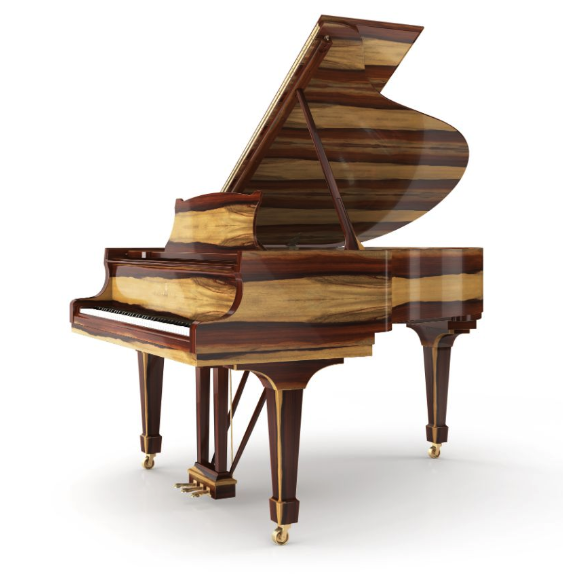
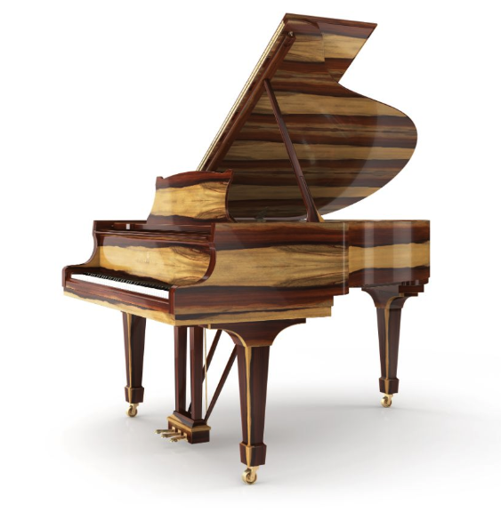

Grands

Steinway makes the following models of grand pianos and upright pianos:
Steinway's factory in Hamburg makes seven models of grand pianos and two models of upright pianos. (The numerical portion of each model designation represents the length of the grand pianos and the height of the upright pianos, in centimeters).
- Grand pianos: S-155, M-170, O-180, A-188, B-211, C-227, D-274
- Upright pianos: V-125, K-132
Steinway's factory in Queens makes six models of grand pianos and one model of upright piano. (Steinway has previously made upright pianos in different dimensions.)
- Grand pianos: S (5'1"), M (5'7"), O (5'10+3⁄4"), A (6'2"), B (6'11"), D (8'11+3⁄4")
- Upright Pianos: K (52" high).
The Model L (5’ 10 1⁄2") was produced and sold as a replacement for the Model O from 1922 to 2006.

Uprights
Special Collections


 

Exotic Woods
Steinway began creating art case pianos in 1857 and the making of art case pianos reached its peak in the late 19th century. Today, Steinway only builds art case pianos on rare occasions. The art case pianos are unique, because Steinway builds only one of each. Some of Steinway's most notable art case pianos are the Alma-Tadema grand piano from 1887, the 100,000th Steinway piano from 1903, the 300,000th Steinway piano from 1938, and the Sound of Harmony from 2008.